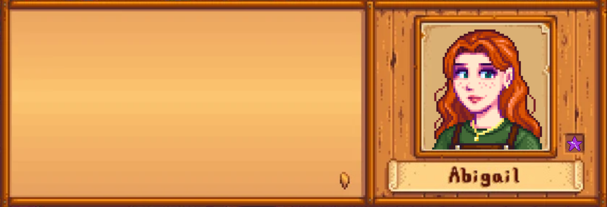
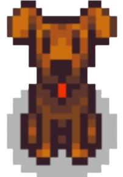
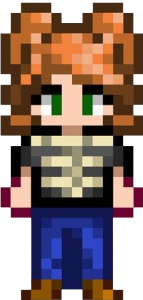
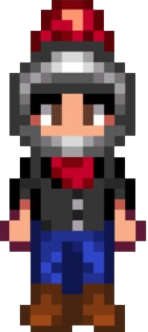
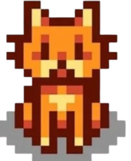

One Year of Us
Home
Adventures
Game
Photos
Letter
Days since me became we
0

Hello my love, hope you are enjoying the site! I'm here to tell you we've played 31 hours and 46 minutes on StardewValley.



